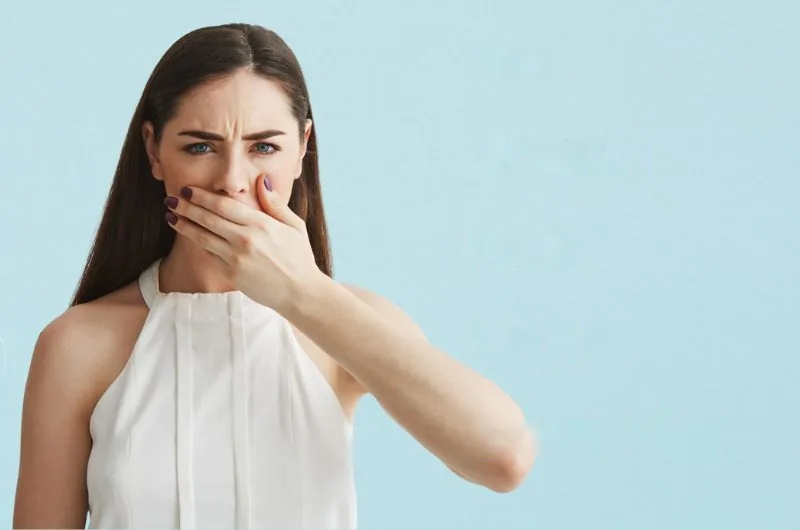

Запах изо рта после удаления зубаПосле любого удаления зуба можно ожидать некоторых нормальных явлений. Одно из них — неприятный запах изо рта. Возможно, на людях или во время разговора вы будете прикрывать рот рукой, чтобы это скрыть. Но не волнуйтесь: неприятный запах после удаления зуба — ожидаемое и временное явление. Главное — правильно с ним справляться.
Что считается нормой после удаления зуба?
После удаления зуба можно ожидать некоторых состояний. Они могут отличаться у разных людей.
Вот некоторые частые состояния, которых можно ожидать после удаления зуба:
Боль:
Когда действие местной анестезии заканчивается, обычно ощущается некоторая боль и дискомфорт в челюсти. Это может продолжаться несколько дней. Если вам назначили обезболивающие, принимайте их согласно инструкции.
Кровотечение:
После удаления зуба лунка (углубление в десне) заполняется кровью и образует сгусток или корочку, как при порезе на коже; этот сгусток нельзя трогать или удалять. Держите язык, зубную щётку и твёрдую пищу подальше от сгустка. Не пользуйтесь соломинкой — всасывание может вытянуть сгусток из лунки и вызвать кровотечение. В первые несколько часов лунка может немного кровоточить. Если вам кажется, что кровотечение слишком сильное, можно прижать марлевые тампоны, крепко прикусив их на 20–30 минут. При необходимости повторите это 2–3 раза.
Отёк:
Если удаление было хирургическим, отёк челюсти и щёк — обычное явление. Как правило, он нарастает в течение 2–3 дней после операции, а затем начинает спадать. Чтобы уменьшить отёк, в первые 24 часа (кроме времени сна) можно прикладывать к наружной стороне челюсти пакет со льдом, обёрнутый тканью или полотенцем.
Трудности при глотании и широком открывании рта:
В течение нескольких дней может быть трудно широко открывать рот. В первые часы после операции также может быть трудно глотать из-за онемения, а затем — из-за дискомфорта и боли. У некоторых людей трудностей с глотанием не возникает.
Синяки:
Через несколько дней на подбородке и шее могут появиться синяки, а если у вас легко появляются синяки, их может быть больше. Обычно синяки проходят в течение одной-двух недель.
Повышенная температура:
В течение 24–48 часов после операции может держаться температура выше 38 °C. Также возможны тошнота или рвота. Это может быть связано с операцией, седативными средствами (препаратами, которые обезболивают полость рта и помогают расслабиться) или обезболивающими, применявшимися во время операции. Со временем это проходит. Повышение температуры также может быть вызвано недостаточным потреблением жидкости, поэтому пейте достаточно.
Неприятный запах изо рта:
Неприятный запах изо рта часто появляется после удаления зуба и может иметь разные причины. Подробности — в следующих разделах.
Сухая лунка:
Сухая лунка (альвеолит) — болезненное состояние, которое не проходит от обезболивающих и может возникнуть после любого удаления зуба. В зависимости от силы боли может потребоваться прийти в клинику на лечение.
Почему после удаления зуба появляется неприятный запах изо рта?
Причины неприятного запаха:
Неприятный запах после удаления зуба встречается довольно часто и является частью процесса заживления. Обычно он не требует срочных мер. Вот частые причины, по которым после удаления зуба может появиться неприятный запах:
Инфекция:
Инфекция может возникнуть, если бактерии попадают в открытую рану, оставшуюся после удаления зуба. Если рана инфицируется бактериями, она может издавать неприятный запах, который ощущается при дыхании. В таких случаях запах часто сопровождается повышенной температурой, гноем и сильной болью. При симптомах инфекции нужно немедленно обратиться к стоматологу. Нелеченые бактериальные инфекции могут привести к более серьёзным проблемам со здоровьем.
Послеоперационное кровотечение и кровяные сгустки:
После удаления зуба лунка обычно заполняется кровью и в первые несколько часов кровоточит. Так образуется сгусток, как при порезе на коже. Кровяные сгустки во рту могут стать питательной средой для анаэробных бактерий, которые размножаются без кислорода. Эти бактерии вызывают брожение и распространяют неприятный запах. Скопившаяся во рту кровь может вызывать неприятный запах и привкус, особенно ночью.
Сухая лунка:
Сухая лунка — болезненное состояние, которое может возникнуть после удаления зуба. Она развивается, когда кровяной сгусток в лунке не формируется должным образом или смещается и кость остаётся открытой. Открытая кость создаёт среду, в которой задерживаются остатки пищи и бактерии; они размножаются и выделяют дурно пахнущие вещества. Распознать это можно, если боль сохраняется после того, как первоначальная боль от операции утихла. Неприятный привкус и запах во рту — симптомы сухой лунки. Она чаще возникает на нижней челюсти, а также у женщин (особенно принимающих противозачаточные таблетки) и у курильщиков.
Плохая гигиена полости рта:
После удаления зуба чистить зубы вокруг лунки бывает неприятно, и многие избегают чистки или чистят слегка. Из-за этого на зубах и дёснах скапливается бактериальный налёт, а остатки пищи застревают между зубами или в лунке и начинают разлагаться. Поскольку во рту есть рана, после удаления зуба как никогда важно поддерживать хорошую гигиену, чтобы предотвратить инфекцию.
Сухость во рту:
Сухость во рту — состояние, при котором выделяется недостаточно слюны. Слюна играет важную роль в поддержании чистоты и влажности полости рта, удаляя остатки пищи и бактерии; уменьшение её выработки нарушает это очищение и вызывает неприятный запах. Сухость во рту — частый побочный эффект многих обезболивающих, назначаемых после удаления зуба. Сухость может появиться и во время операции из-за открытого рта или применяемых анестетиков. Чтобы бороться с сухостью, важно поддерживать полость рта влажной, выпивая много воды.
Застревание остатков пищи в лунке:
Десне может потребоваться несколько недель, чтобы полностью закрыть лунку удалённого зуба. Пока лунка полностью не закрылась, в ней, скорее всего, будут застревать остатки пищи, что может вызывать неприятный запах и привкус во рту. Полоскание солевым раствором помогает поддерживать чистоту полости рта.
Когда проходит неприятный запах?
Обычно неприятный запах проходит в течение одного-двух дней при регулярной чистке зубов и полоскании солевым раствором (через 24 часа после удаления).
Нужно ли обращаться к стоматологу, если запах не проходит?
Если неприятный запах сохраняется или сопровождается другими симптомами, такими как сильная боль, усиливающийся отёк, выделение гноя или повышенная температура, это может быть признаком более серьёзной проблемы, например инфекции или сухой лунки. В этом случае нужно обратиться к стоматологу.
Что делать, чтобы предотвратить неприятный запах после удаления зуба или справиться с ним?
Вот что нужно делать, чтобы предотвратить неприятный запах после удаления зуба или справиться с ним:
- Поддерживайте хорошую гигиену полости рта. Это самый важный и эффективный способ борьбы с неприятным запахом.
- Не полощите рот в первые 24 часа. Полоскание может сместить кровяной сгусток и снова вызвать кровотечение.
- Через 24 часа после удаления начните осторожно полоскать рот тёплым солевым раствором. Повторяйте это 3–4 раза в день, особенно после еды. По мере заживления разреза на десне можно полоскать интенсивнее. В первые 7 дней не полощите рот ничем, кроме назначенного ополаскивателя или физраствора.
- Чистите зубы, но начинайте только через 24 часа. Используйте щётку с мягкой щетиной и аккуратно чистите вокруг лунки. Чистите и язык — на нём могут быть бактерии, вызывающие неприятный запах.
- Осторожно пользуйтесь зубной нитью и старайтесь не задевать рану.
- Пейте достаточно жидкости. Обильное питьё помогает предотвратить сухость во рту и уменьшает неприятный запах, очищая рот от бактерий.
- В первые 24 часа не ешьте горячую пищу и не пейте горячие напитки; в это время можно есть и пить холодную мягкую пищу и напитки.
- В первые 2–3 дня выбирайте мягкую пищу: суп, йогурт, пудинг, мороженое и т. п. Мягкая пища не повредит швы и не застрянет в пустых лунках.
- Избегайте острой по краям, царапающей или липкой пищи.
- Не жуйте твёрдую или трудно пережёвываемую пищу в области пустой лунки, пока жевать там не станет комфортно.
- Избегайте пищи с резким запахом и острой пищи.
- Не трогайте и не удаляйте кровяной сгусток языком, зубной щёткой или твёрдой пищей.
- Не пользуйтесь соломинкой. Всасывание может сместить сгусток.
- Избегайте частого сплёвывания.
- Откажитесь от курения и алкоголя.
- Курение может замедлить заживление и повысить риск инфекции или сухой лунки. Оно также может вызывать сухость во рту и повышать риск кровотечения. В первые 24 часа избегайте алкоголя.
- Отказ от интенсивных физических нагрузок в первые 24 часа поможет заживлению.
- Помимо питья воды, при сухости во рту попробуйте жевать жевательную резинку без сахара или рассасывать леденцы без сахара.
- Соблюдайте рекомендации по послеоперационному уходу, которые дал вам стоматолог или хирург.
Неприятный запах после удаления зуба: частые вопросы
Появляется ли неприятный запах после каждого удаления зуба?
Неприятный запах может появляться не после каждого удаления, но неприятный запах изо рта после удаления зуба (галитоз) — очень частое побочное явление. Особенно часто он возникает после удаления зубов мудрости.
Нужно ли чистить лунку, когда я чищу зубы?
Нет, не чистите лунку щёткой сразу после удаления зуба. Вместо того чтобы чистить саму лунку в период заживления, лучше всего поддерживать чистоту этой области мягкими полосканиями солевым раствором после первых 24 часов и аккуратно чистить остальные зубы.
Сколько держится неприятный запах после удаления зуба?
Обычно он проходит в течение одного-двух дней, когда вы начинаете чистить зубы дважды в день и регулярно полоскать рот.
Что делать, если неприятный запах после удаления зуба не проходит?
В обычной ситуации неприятный запах уменьшается через 1–2 дня после удаления зуба. Однако если он сохраняется, у него может быть другая причина. В этом случае нужно обратиться к врачу на осмотр.